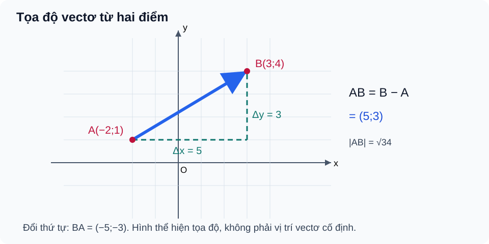
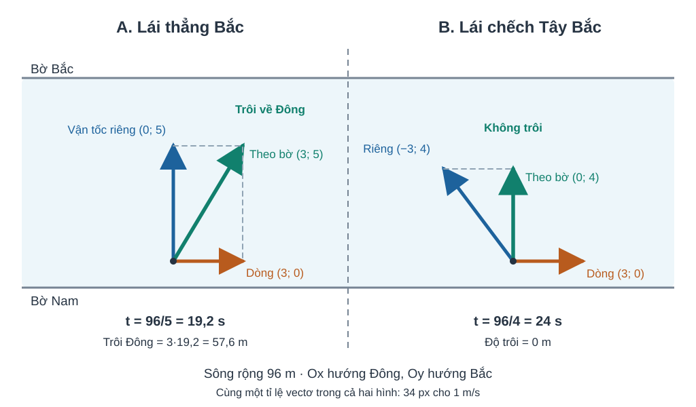

Bài 10. Vectơ trong mặt phẳng tọa độ
TOÁN 10 · CHƯƠNG IV · KIẾN THỨC SGK KNTT
1. Khám phá kiến thức
1.1. Cùng tìm hiểu
Vì sao cần học? Trên bản đồ dự báo bão, biết một vị trí rồi mới biết vị trí sau đó không chỉ cần một độ dài: ta cần biết đã dịch chuyển bao nhiêu về Đông–Tây và bao nhiêu về Bắc–Nam. Hai con số ấy mô tả vectơ độ dời, không phải hai tọa độ của vị trí cuối.
Từ Bài 8 và Bài 9, em đã biết ghép vectơ và nhân vectơ với số. Trong hệ trục vuông góc \(Oxy\), lấy \(\vec i\) là một bước đơn vị theo \(Ox\), \(\vec j\) là một bước đơn vị theo \(Oy\). Mỗi vectơ \(\vec u\) đều có thể viết duy nhất dưới dạng \(\vec u=x\vec i+y\vec j\). Vì hai hướng trục không cùng phương nên cặp \((x;y)\) chính là cách ghi ngắn gọn hai thành phần của vectơ.
Ví dụ ngay trong hình bên dưới: từ \(A(-2;1)\) tới \(B(3;4)\), mũi tên đi \(5\) đơn vị sang phải và \(3\) đơn vị lên trên. Vì thế \(\overrightarrow{AB}=(5;3)\); đừng nhầm với tọa độ điểm \(B(3;4)\). Dời cả hai điểm sang vị trí khác nhưng giữ nguyên độ dời thì tọa độ vectơ không đổi.
1.2. Ví dụ trực quan

Đọc hình: hãy xác định đuôi A, đầu B, hướng dọc trục hoành và dọc trục tung. Tọa độ của vectơ là hai độ thay đổi có dấu, không phải độ dài theo hai trục (độ dài không âm).
Vận dụng. Cho A(-3;2), B(2;-1). Tìm tọa độ \(\overrightarrow{AB}\) và \(\overrightarrow{BA}\).
Đối chiếu
Kết quả: \(\overrightarrow{AB}=(5;-3)\), \(\overrightarrow{BA}=(-5;3)\).
Vì sao: 2−(−3)=5 và −1−2=−3. Đảo điểm đầu/cuối làm vectơ đối.
Kiểm lỗi
Lỗi thường gặp: Với \(A(-3;2)\), \(B(2;-1)\), một học sinh ghi \(\overrightarrow{AB}=(2;-1)\) vì nhìn ngay tọa độ B. Kết quả sai: đó là tọa độ điểm B, không phải độ dời từ A đến B.
Vì sao sai? Vectơ \(\overrightarrow{AB}=\overrightarrow{OB}-\overrightarrow{OA}\); khi A khác O, không thể bỏ đi thành phần xuất phát.
- Đánh dấu: A là điểm đầu, B là điểm cuối.
- Sửa phép tính: \(\overrightarrow{AB}=(2-(-3);-1-2)=(5;-3)\).
- Tự kiểm: \(\overrightarrow{BA}=(-5;3)\), là vectơ đối của \(\overrightarrow{AB}\).
Ôn và luyện lại: Mở lại hình tọa độ ở tab Khám phá, tự làm một câu tìm điểm cuối từ vectơ trong Core và Luyện tập. Đừng xem lời giải trước khi thử.
Từ trực quan đến tính toán: khi ghép hai mũi tên, hoành độ chỉ cộng với hoành độ, tung độ chỉ cộng với tung độ. Nếu trừ một vectơ, dấu trừ tác động lên cả hai thành phần.
Vận dụng. \(\vec u=(2;-1)\), \(\vec v=(-1;3)\). Tính \(2\vec u-\vec v\).
Đối chiếu
Kết quả: \((5;-5)\).
Vì sao: \(2\vec u=(4;-2)\); trừ \(\vec v=(-1;3)\) theo từng thành phần: \(2\vec u-\vec v=(4-(-1);-2-3)=(5;-5)\).
Kiểm lỗi dùng chung: Xem hướng dẫn tự sửa. Một độ dài, không phải hai chặng: nếu đi \(3\) ô sang Đông rồi \(4\) ô lên Bắc thì đường đi theo lưới dài \(7\) ô, nhưng khoảng cách nối đầu–cuối là cạnh huyền tam giác vuông, chỉ dài \(5\) ô. Định lí Pythagore giải thích vì sao độ dài vectơ cần căn của tổng bình phương hai thành phần.
Vận dụng. Cho A(1;2), B(4;6). Khoảng cách AB là 7 hay 5 đơn vị?
Đối chiếu
Kết quả: 5 đơn vị.
Vì sao: \(\overrightarrow{AB}=(3;4)\), nên \(AB=|\overrightarrow{AB}|=\sqrt{3^2+4^2}=5\). 7 là tổng chặng theo hai trục, không phải khoảng cách thẳng.
Kiểm lỗi dùng chung: Xem hướng dẫn tự sửa. Nhìn hai thành phần để xét hướng: \((2;1)\) và \((6;3)\) có cùng một hệ số nhân \(3\) ở cả hai tọa độ. Nếu một thành phần không cùng tỉ lệ, hai vectơ khác không không cùng phương. Không bao giờ chia cho một thành phần bằng \(0\) để “tìm tỉ số”.
Vận dụng. Với \(\vec u=(2;1)\), \(\vec v=(6;3)\), \(\vec w=(6;4)\). Vectơ nào cùng phương với u (biết cả ba đều khác 0)?
Đối chiếu
Kết quả: Chỉ \(\vec v\) cùng phương với \(\vec u\), vì \(\vec v=3\vec u\); \(\vec w\) không cùng phương.
Vì sao: Cặp (6,4) có tỉ số x=3 nhưng y=4, không thể tìm cùng k cho hai tọa độ.
Kiểm lỗi dùng chung: Xem hướng dẫn tự sửa. Trung bình tọa độ có ý nghĩa gì? Trung điểm cân bằng hai đầu mút; trọng tâm tam giác cân bằng ba đỉnh. Ta lấy trung bình riêng từng trục chứ không lấy trung bình độ dài hay lẫn các trục.
Vận dụng. Cho A(-2;4), B(4;0), C(1;5). Tính trung điểm M của AB và trọng tâm G của ABC.
Đối chiếu
Kết quả: \(M=(1;2)\), \(G=(1;3)\).
Vì sao: M: ((−2+4)/2;(4+0)/2)=(1;2); G: ((−2+4+1)/3;(4+0+5)/3)=(1;3).
Kiểm lỗi
Lỗi thường gặp 1: Với \(A(-2;4)\), \(B(4;0)\), \(C(1;5)\), học sinh nhầm trọng tâm với trung điểm \(AB\) và ghi \(G(1;2)\). Đúng phải là \(G(1;3)\) vì tọa độ trọng tâm là trung bình ba đỉnh, không chỉ hai đỉnh.
Lỗi thường gặp 2: Trong Vận dụng, \(\vec u=(2;1)\) và \(\vec w=(6;4)\) không cùng phương vì \(2\cdot4-1\cdot6=2\ne0\), dù hoành độ đều dương. Ngược lại, \(\vec v=(6;3)=3\vec u\) mới cùng phương với \(\vec u\).
Vì sao sai? Công thức trọng tâm khác trung điểm về số điểm lấy trung bình; còn cùng phương đòi hỏi một hệ số nhân chung cho cả hai thành phần. Khi gặp thành phần \(0\), không lập tỉ số có mẫu \(0\).
Sửa và tự kiểm: Trọng tâm chia \(3\) cho cả hoành và tung; soát lại bằng \(\overrightarrow{GA}+\overrightarrow{GB}+\overrightarrow{GC}=\vec0\). Với cùng phương, tính \(ad-bc\) hoặc kiểm trực tiếp \(\vec v=t\vec u\).
Ôn và luyện lại: Tự thử một bài tìm trung điểm, một bài trọng tâm và một bài kiểm cùng phương trong Luyện tập, không dùng bài đã xem lời giải để tính là kiểm tra độc lập.
Ứng dụng mở rộng — dòng nước: có hai vận tốc khác nhau: vận tốc ca nô so với nước (hướng mũi lái) và vận tốc thực so với bờ (hướng di chuyển). Vectơ vận tốc thực là tổng vectơ vận tốc riêng và vectơ dòng nước. Chọn trục \(Ox\) về Đông, \(Oy\) về Bắc; muốn tính thời gian qua sông phải xem thành phần vận tốc hướng Bắc.
Vận dụng 6 — tự thử: Sông rộng \(60\,\mathrm m\), dòng chảy đều \(3\,\mathrm{m/s}\) về Đông. Ca nô chạy \(5\,\mathrm{m/s}\) so với nước, lái thẳng Bắc. Ca nô trôi bao nhiêu mét về Đông khi tới bờ bên kia? Đặt hai thành phần theo trục trước khi tính.
Đối chiếu
Kết quả: Trôi \(36\,\mathrm m\) về Đông.
Vì sao: vận tốc theo bờ \(\vec v_{\mathrm{bờ}}=(3;5)\,\mathrm{m/s}\). Thành phần hướng Bắc \(5\,\mathrm{m/s}\) quyết định thời gian \(t=60/5=12\,\mathrm s\); do đó độ trôi ngang \(3\cdot12=36\,\mathrm m\). Độ lớn vận tốc thực \(\sqrt{34}\,\mathrm{m/s}\) không phải thành phần qua sông; không lấy \(60/\sqrt{34}\).
Kiểm lỗi
Lỗi thường gặp: Sông rộng \(60\,\mathrm m\), ca nô lái thẳng Bắc \(5\,\mathrm{m/s}\) so với nước, dòng chảy Đông \(3\,\mathrm{m/s}\). Một lời giải tính \(t=60/\sqrt{5^2+3^2}\). Thời gian đó sai.
Vì sao sai? \(\sqrt{34}\,\mathrm{m/s}\) là độ lớn vận tốc theo bờ, nhưng bề rộng sông chỉ đo theo hướng Bắc. Thành phần hướng Bắc thực tế vẫn là \(5\,\mathrm{m/s}\).
- Xác định trục và hệ quy chiếu: \(Ox\) Đông, \(Oy\) Bắc; \(\vec v_{\mathrm{bờ}}=\vec v_{\mathrm{riêng}}+\vec v_{\mathrm{dòng}}=(3;5)\,\mathrm{m/s}\).
- Sửa: \(t=60/5=12\,\mathrm s\), trôi Đông \(3\cdot12=36\,\mathrm m\).
- Thử kiểm: Nếu dòng nước tăng nhưng mũi thuyền vẫn hướng Bắc với cùng tốc độ riêng, thành phần Bắc không đổi nên thời gian qua sông không đổi (chỉ tăng độ trôi).
Ôn và luyện lại: Nhắc lại phép cộng vectơ ở Bài 8 và tọa độ theo trục ở Bài 10, rồi thử tự giải một bài ca nô với số liệu khác. Nếu muốn không trôi, phải có thành phần vận tốc theo bờ hướng Đông bằng \(0\) và thành phần Bắc dương; trường hợp tốc độ dòng không nhỏ hơn tốc độ riêng không thể vừa chống trôi vừa tới bờ đích trong mô hình này.
1.3. Thuật ngữ, kiến thức và kỹ năng
Từ khóa cần phân biệt: tọa độ điểm là vị trí, tọa độ vectơ là độ thay đổi có hướng; vectơ đơn vị \(\vec i,\vec j\) xác định hai chiều trục; độ dài vectơ khác tổng quãng đường đi theo lưới; hai vectơ cùng phương cần một hệ số nhân chung.
Sau bài này: em biểu diễn được \(\vec u=x\vec i+y\vec j\); tính \(\overrightarrow{AB}\), phép toán, độ dài/khoảng cách, kiểm cùng phương (xét vectơ-không riêng), trung điểm/trọng tâm và dùng tọa độ để diễn giải chuyển động. Nếu nhầm dấu, chuyển sang tab Lỗi thường gặp để tự sửa.
2. Kiến thức SGK
2.1. Tọa độ của vectơ
Trong hệ trục vuông góc \(Oxy\), \(\vec i\) và \(\vec j\) là hai vectơ đơn vị theo chiều dương của hai trục. Phân tích \(\vec u\) theo hai vectơ không cùng phương ấy rồi lấy hai hệ số làm tọa độ của vectơ.
Cách đọc hình từ Bài 9: vì \(\vec i,\vec j\) không cùng phương, cặp hệ số trên là duy nhất. Hai mũi tên đặt ở các vị trí khác nhau vẫn biểu diễn cùng một vectơ nếu có cùng hai độ thay đổi có dấu.
2.2. Biểu thức tọa độ của các phép toán vectơ
Nếu \(\vec u=(a;b)\), \(\vec v=(c;d)\), \(t\in\mathbb R\), các phép toán thực hiện trên hai thành phần tương ứng, không cộng chéo hoành độ và tung độ.
Tại sao lại “cuối trừ đầu”? Theo Bài 8, \(\overrightarrow{AB}=\overrightarrow{OB}-\overrightarrow{OA}\). Hai vectơ chung gốc \(O\) có tọa độ lần lượt là tọa độ \(B\) và \(A\); vì vậy hiệu của chúng cho ra hai độ dời. Không lấy luôn tọa độ \(B\) nếu \(A\ne O\).
Vì sao điều kiện \(ad-bc=0\) có ích? Khi một tọa độ bằng \(0\), lập tỉ số \(c/a\) hoặc \(d/b\) có thể vô nghĩa. Phép kiểm \(ad-bc\) chỉ dùng nhân và trừ, không có mẫu số bằng \(0\). Với \(\vec0\), việc nói “hướng mũi tên” cần tách khỏi quy ước cùng phương trong SGK.
3. Ví dụ
Trước mỗi lời giải, tự chỉ ra dữ kiện → cần tìm → chọn quy tắc nào và vì sao. Sau đó soát điều kiện và chiều mũi tên; không lấy một lời giải đã xem làm chứng cứ tự kiểm tra độc lập.
3.1. Ví dụ 1 — Tọa độ vectơ và khoảng cách hai điểm
Đề: Cho \(A(-1;2)\), \(B(3;5)\). Tìm \(\overrightarrow{AB}\), \(AB\).
Phân tích: Có hai điểm đầu–cuối nên trước hết chọn quy tắc \(\overrightarrow{AB}=\overrightarrow{OB}-\overrightarrow{OA}\); sau khi có tọa độ vectơ mới dùng Pythagore để tìm khoảng cách thẳng, không cộng hai độ thay đổi.
Giải: \(\overrightarrow{AB}=(3-(-1);5-2)=(4;3)\). Do đó \(AB=\sqrt{4^2+3^2}=5\).
Kiểm lại: \(\overrightarrow{BA}=(-4;-3)\). Hai vectơ đối nhau nhưng có cùng độ dài \(5\). Công thức tọa độ điểm cuối trừ điểm đầu chỉ đổi thành tọa độ \(B\) khi \(A=O\).
3.2. Ví dụ 2 — Phép toán vectơ và xét cùng phương
Đề: Cho \(\vec u=(2;-1)\), \(\vec v=(-3;4)\). Tính \(2\vec u-\vec v\). Vectơ kết quả có cùng phương với \(\vec u\) không?
Phân tích: Dùng phép toán theo từng tọa độ; khi xét cùng phương, kiểm hai thành phần có cùng một hệ số thay vì nhìn riêng một tọa độ.
Giải: \(2\vec u=(4;-2)\), nên \(2\vec u-\vec v=(4-(-3);-2-4)=(7;-6)\). Với \(\vec w=(7;-6)\), ta có \(2\cdot(-6)-(-1)\cdot7=-5\ne0\), do đó \(\vec w\) không cùng phương với \(\vec u\).
Kiểm lại: Nếu bỏ ngoặc khi trừ \(-3\), em dễ ra \((1;-6)\), sai ở hoành độ. Phép kiểm định thức tránh chia cho một thành phần có thể bằng \(0\).
3.3. Ví dụ 3 — Trung điểm và trọng tâm có giả thiết
Đề: Cho tam giác \(A(1;3)\), \(B(5;-1)\), \(C(-2;4)\). Tìm trung điểm \(M\) của \(AB\) và trọng tâm \(G\) của tam giác.
Phân tích: Trung điểm lấy trung bình hai tọa độ theo từng trục; trọng tâm lấy trung bình ba tọa độ của ba đỉnh. Ba điểm không thẳng hàng nên có một tam giác và trọng tâm hình học xác định.
Giải: \(M=((1+5)/2;(3-1)/2)=(3;1)\). \(G=((1+5-2)/3;(3-1+4)/3)=(4/3;2)\).
Kiểm lại: \(M\) nằm giữa A, B; \(\overrightarrow{GA}+\overrightarrow{GB}+\overrightarrow{GC}=\vec0\) theo từng tọa độ. Không dùng mẫu \(2\) cho trọng tâm.
3.4. Ví dụ 4 — Qua sông: tổng vectơ vận tốc và điều kiện không trôi
Đề: Sông rộng \(96\,\mathrm m\), nước chảy đều \(3\,\mathrm{m/s}\) về Đông. Ca nô chạy với tốc độ riêng \(5\,\mathrm{m/s}\) so với nước. So sánh việc (a) lái thẳng Bắc và (b) lái chếch Tây Bắc để cập đúng điểm đối diện. Giả sử dòng chảy và tốc độ riêng không đổi, hai bờ song song.
Phân tích: Lấy \(Ox\) hướng Đông, \(Oy\) hướng Bắc. Vận tốc theo bờ là tổng vectơ \(\vec v_{\mathrm{bờ}}=\vec v_{\mathrm{riêng}}+\vec v_{\mathrm{dòng}}\). Thời gian vượt sông bằng \(96\) chia cho thành phần Bắc dương của vận tốc theo bờ. Không lấy \(96/|\vec v_{\mathrm{bờ}}|\) khi vận tốc có thành phần dọc bờ.
Giải: (a) \(\vec v_{\mathrm{riêng}}=(0;5)\), \(\vec v_{\mathrm{dòng}}=(3;0)\), nên \(\vec v_{\mathrm{bờ}}=(3;5)\,\mathrm{m/s}\). Thời gian qua sông \(t=96/5=19{,}2\,\mathrm s\); độ trôi Đông \(3\cdot19{,}2=57{,}6\,\mathrm m\).
(b) Muốn không trôi phải có \(\vec v_{\mathrm{bờ},x}=0\), tức thành phần vận tốc riêng theo trục Ox (chiều dương về Đông) bằng \(-3\) m/s, tức 3 m/s về Tây. Vì tốc độ riêng bằng \(5\), thành phần Bắc cần dương:
Kiểm lại và giới hạn: \(3^2+4^2=5^2\) đúng tốc độ riêng; chọn \(-4\) làm thành phần Bắc sẽ đi xa bờ cần đến. Muốn vừa không trôi vừa đi tới bờ đích phải có tốc độ dòng nhỏ hơn tốc độ riêng. Không dùng định lí Pythagore để thay cho bước cộng vectơ vận tốc tương đối.

4. Lỗi thường gặp và cách tự khắc phục
Học tiếp: Core và Luyện tập · Tự kiểm tra cuối chương.
Nguồn toán học: SGK Toán 10 Kết nối tri thức với cuộc sống, tập 1, Bài 10 (trang in 59–65); SBT dùng để tham khảo dạng bài, không thay thế SGK. Phần ví dụ và giải thích do SLM biên soạn phục vụ tự học.